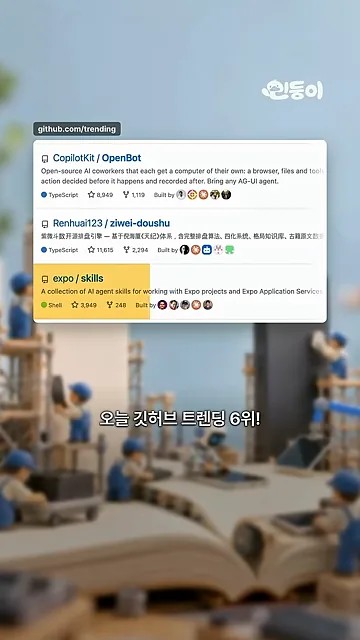
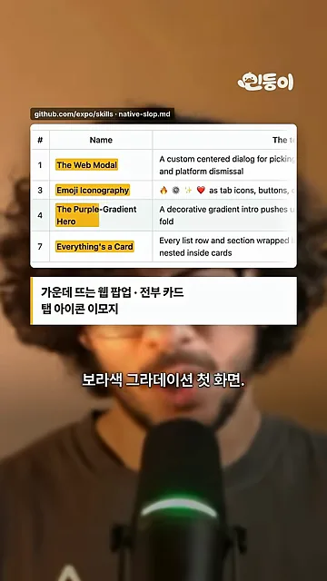
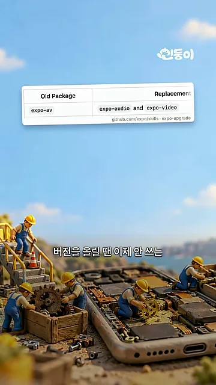
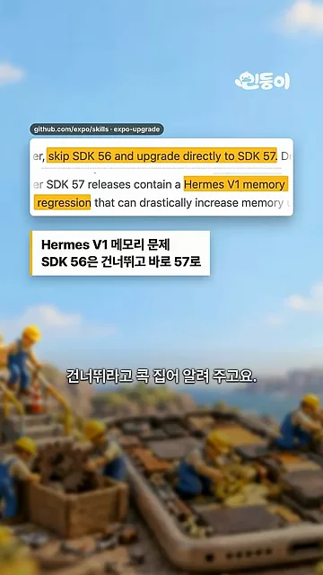

AI 앱의 티 스무 가지
영상은 GitHub 트렌딩 화면에서 시작해요. 목록 세 번째 줄의 expo/skills에 노란 표시가 붙어 있고, 손글씨로 '6위'라고 적어 뒀어요. 설명 줄에는 Expo 프로젝트와 Expo Application Services를 다루는 AI 에이전트 스킬 모음이라고 나와요.

스킬은 AI 코딩 에이전트가 앱을 만들 때 읽는 지침서예요. 영상이 가장 재밌다고 꼽은 부분은 native-slop.md라는 파일이에요. AI가 만든 앱에서 자주 보이는 '티'를 스무 가지로 모아 이름을 붙여 뒀어요. 아래 화면의 표에서 노랗게 칠한 네 줄이 영상이 소개한 것들이에요.

화면의 글씨가 작아서 네 줄을 표로 옮겼어요.
| 번호 | 이름 | 어떻게 보이나요 |
|---|---|---|
| 1 | The Web Modal | 화면 가운데 둥 뜨는 웹 같은 팝업 |
| 3 | Emoji Iconography | 탭 아이콘이나 버튼 자리에 박힌 이모지 |
| 4 | The Purple-Gradient Hero | 보라색 그라디언트로 장식한 첫 화면 |
| 7 | Everything's a Card | 모든 줄과 구역을 카드로 감싸 쌓은 화면 |
이름이 있으면 에이전트가 자기 결과물을 보고 "이건 그 패턴이다"라고 짚을 수 있어요. 막연히 '네이티브답게'라고 시키는 것보다 훨씬 구체적인 기준이 되죠.
다 만들었다고 하기 전에
스킬은 '다 만들었다'고 말하기 전에 확인할 것도 정해 둬요. 아래 화면 위쪽 영어 문장에서 노랗게 칠한 부분이 핵심이에요. 데이터를 불러오는 화면은 loading, error, empty, content 네 가지 상태를 갖춰야 한다는 규칙이에요. 영상은 그 아래에 '로딩 중', '오류', '빈 화면'을 손글씨로 하나씩 체크해요.
버튼에도 기준이 있어요. 다음 화면의 강조 문장은 빈 핸들러와 성공 알림은 구현이 아니라는 뜻이에요. 영상은 이런 버튼을 '가짜 버튼'이라고 부르고 빨간 X를 그어 둬요.
AI 에이전트는 버튼 모양만 만들고 '완료'라고 보고하는 일이 잦아요. 이 규칙은 그런 보고를 막아요.
업그레이드, 웹에서 앱으로, 설치
버전을 올릴 때
업그레이드 스킬은 더 이상 쓰지 않는 패키지를 무엇으로 바꿀지 표로 알려 줘요. 화면의 표에서 왼쪽 Old Package 칸에 expo-av, 오른쪽 Replacement 칸에 expo-audio와 expo-video가 있어요.

건너뛸 버전도 콕 집어요. 다음 화면의 강조 문장은 SDK 56을 건너뛰고 바로 SDK 57로 올리라는 내용이에요. 이유는 Hermes V1의 메모리 문제예요. 아래 한국어 상자가 이를 'Hermes V1 메모리 문제, SDK 56은 건너뛰고 바로 57로'라고 줄여 놨어요.

웹 서비스를 앱으로
웹으로 만든 서비스를 앱으로 옮기는 스킬도 있어요. 화면 위쪽 원칙 두 줄이 핵심이에요. 'Ship on day one'은 첫날 웹 화면을 DOM(Document Object Model) 컴포넌트로 감싼 앱 껍데기에 그대로 담아 바로 출시하라는 뜻이에요. 'Nativize the hot screens'는 자주 쓰는 화면부터 진짜 네이티브 화면으로 바꾸라는 뜻이에요.
설치
설치는 Claude Code나 Codex에 'Expo 플러그인 설치해 줘'라고 말하면 된다고 해요. 화면에는 두 도구의 실제 명령이 위아래로 나와요.
claude plugin install expo@claude-plugins-official
codex plugin add expo@openai-curated